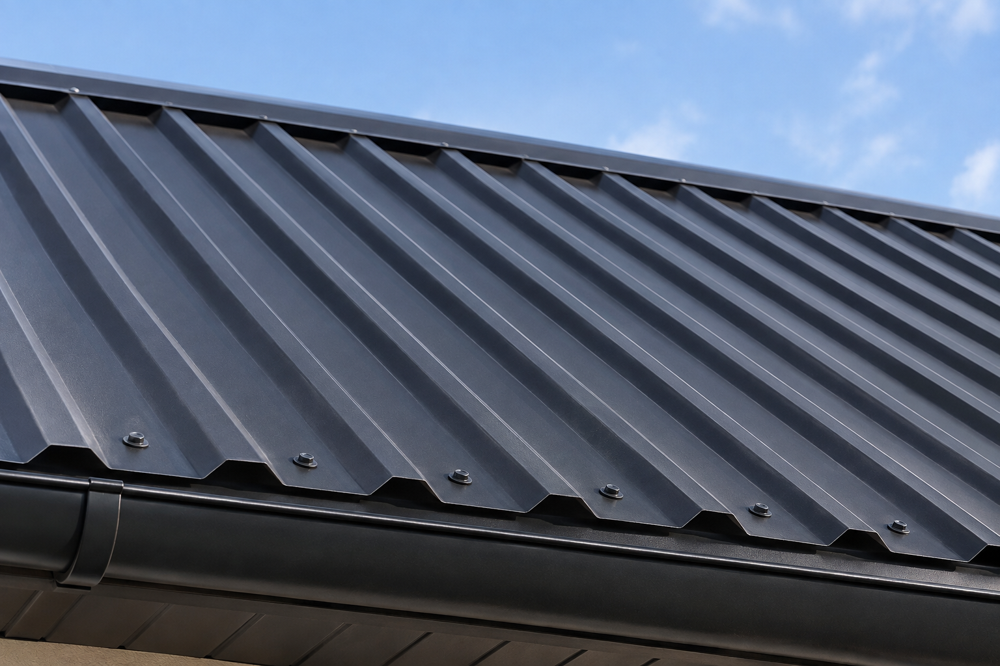

Основание
Профлист повторяет яму. Сначала смотрю плоскость настила и не кладу покрытие на просевшие доски.
Крою частный дом профнастилом: листы веду по скату, стыки и края закрываю сразу. Работаю лично в Архангельске, Северодвинске и Новодвинске. Материалы в цену работ не входят.
от 800 ₽/м²
Позвонить: +7 921 484-08-74
800 ₽/м² — это укладка листов. Обрешётка, плёнка, конёк и торцевые планки идут отдельными строками прайса и только тогда, когда они нужны на этой крыше.
Профлист повторяет яму. Сначала смотрю плоскость настила и не кладу покрытие на просевшие доски.
Шаг подбираю под профиль листа, а не «как осталось от старой крыши». Контробрешётка в прайсе — 250 ₽/м², шаговая обрешётка — 340 ₽/м².
На металле собирается конденсат. Если слоя нет или он порван, ставлю ветровлагозащиту, в прайсе 180 ₽/м².
Веду ряды от карниза вверх. Нахлёст идёт по гофру, а если лист короче ската — ещё и на поперечном стыке.
Саморез ставлю в штатную точку профиля. Слабое крепление и лист начинает стучать, а отверстие пропускает воду.
Верх закрываю коньком, бок — торцевой планкой. В прайсе конёк — 570 ₽/м.п., ветровая планка — 380 ₽/м.п.
Нижний край вывожу так, чтобы вода сходила в желоб, а не под настил. Капельник в прайсе — 300 ₽/м.п.
Желоба ставлю, если воду с карниза нужно увести от стен. Отдельная работа — водосток, желоба 770 ₽/м.п.
В прайсе укладка профнастила — от 800 ₽/м², той же строкой, что и металлочерепица. Итог зависит от площади, формы скатов, состояния обрешётки, демонтажа и узлов. Материалы считаются отдельно.
Если нужен рисунок волны, смотрю металлочерепицу. Другие системы — мягкая кровля и фальцевая кровля. Все работы собраны в прайсе. Сравнение двух листов при одной цене монтажа — в статье металлочерепица или профнастил.
Ориентир по укладке профнастила. Демонтаж и точный состав согласую после фото или осмотра.
Гофр сам воду не держит. Течь начинается там, где короткий стык, слабый саморез или открытый край.
Листы должны перекрыть друг друга на полный гребень. Узкий нахлёст ветер раскрывает на продольном шве.
Если один лист не закрывает скат целиком, верхний ряд напускаю на нижний. Стык вразбежку с крепежом не оставляю.
Открытый бок и короткий вынос пускают воду под лист. Торцевую планку и карниз закрываю вместе с полем, а не после жалобы.
Между профнастилом и плёнкой нужен зазор. Без контробрешётки конденсат остаётся на дереве.
Профнастил не выравнивает старую крышу. Сначала смотрю дерево и плёнку под покрытием и говорю, что из этого реально менять.
Сухое дерево с подходящим шагом оставляю. Гниль и шаг, который не держит профиль, меняю до укладки. Подробнее — обрешётка.
Целый каркас не разбираю. Меняю только те элементы, которые уже не держат нагрузку. Страница работы — стропила.
Дырявую плёнку новым листом не прячу. Слой описан на странице ветровлагозащиты.
Один пробитый участок может остаться ремонтом крыши. Если покрытие кончилось по всей площади, это замена кровли.
Реальные кровельные работы, выполненные мной.
Позвоните или напишите в MAX. Нужны фото скатов, карниза и того, что сейчас лежит на крыше.
По снимку оцениваю, можно ли класть листы на то, что есть. Если неясно — выезжаю на объект.
До старта фиксируем, что входит: только листы или ещё основание, плёнка и планки.
Закрываю скаты и узлы, сдаю крышу. На выполненные работы — гарантия 1 год.
По прайсу укладка листов — 800 ₽/м². Обрешётка, плёнка, конёк и торцевые планки в эту цифру не входят. Материалы считаются отдельно.
От площади и числа скатов, от того, ровная ли обрешётка, и от того, нужно ли снимать старое покрытие и закрывать узлы. Ориентир есть в калькуляторе на этой странице. Точную сумму называю до начала.
Да, если дерево сухое и шаг держит профиль. Если доски просели или шаг слишком редкий, сначала меняю основание, потом кладу листы.
Ставка та же, 800 ₽/м², но геометрия другая: здесь ровный гофр и нахлёст по гребню, а не волна черепицы. Если нужен именно рисунок черепицы, это страница металлочерепицы.
Не обязательно. Локальное повреждение смотрю как ремонт. Новые листы по всей площади нужны, когда старое покрытие уже не держит воду.
Да. Работаю в Архангельске, Северодвинске и Новодвинске.
По снимку скажу, можно ли класть профнастил на текущую обрешётку или сначала нужно основание. Это предварительная оценка, не смета.